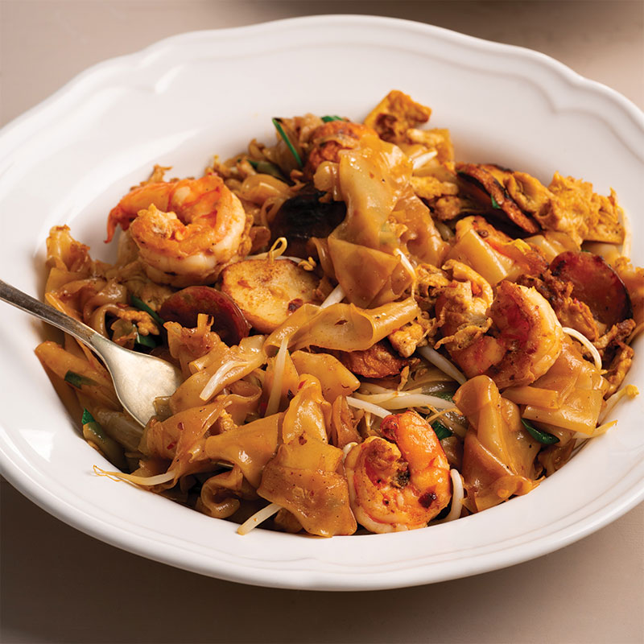

Char Kway Teow

Description
Char Kway Teow is a delightful street food classic that hails from Singapore and Malaysia, it’s easy to
create my version of the stir-fried noodle hawker dish at home with this quick and speedy recipe. Get
ready for spicy, smoky noodles and a good chilli kick. Delicious!
Original recipe can be found here
Ingredients
- 2 tbsp vegetable oil, plus 1 extra tablespoon
- 4 garlic cloves, roughly chopped
- 50g (1.7 oz) thinly sliced Chinese sausage*
- 50g (1.7 oz) thinly sliced Asian fishcakes*
- 8 small prawns, peeled and deveined
- 2 eggs, lightly whisked
- 350g (12 oz) fresh rice noodles
- ¼ cup bean shoots
- 2 stems Chinese garlic chives, cut into batons (alternatively, use spring onion/scallions)
Chilli Paste:
- 50g (1.7 oz) dried red chillies
- 3 fresh mild red chillies, roughly chopped
- 3 Asian red shallots, roughly chopped
- 2 tsp sea salt
- 4 tbsp vegetable oil
Stir-fry Sauce:
- 2 tbsp soy sauce
- 1 tbsp oyster sauce
- 2 tsp fish sauce
- 1 tsp dark sweet soy sauce
- 1 tsp sugar
- ¼ tsp ground black pepper
Steps
- For the chilli paste, soak the dried red chillies in hot water for 15 minutes or until softened.
Then use tongs to remove them from the soaking liquid. Reserve the soaking liquid in case you
need it when blending. Roughly chop the chillies and place them in the bowl of a food processor.
Add the fresh chillies, shallots and salt. Blend until smooth (add a tablespoon of the chilli
soaking liquid if your food processor gets stuck).
- Heat 4 tablespoons of vegetable oil in a frying pan over medium heat. Add the chilli paste and cook,
stirring, for about 5 minutes. Transfer the chilli paste to a jar.
- For the stir-fry sauce, mix the ingredients in a small bowl and set aside for later.
- Heat 2 tablespoons of vegetable oil in a wok or large frying pan over high heat. Add the garlic and
stir-fry for 5 seconds. Then add the Chinese sausage and stir-fry for another 10 seconds. Then
add the fishcakes and the prawns. Stir-fry until the prawns are almost cooked. Then add 2 heaped
tablespoons (or to taste) of the chilli paste. Toss to combine. Then push the ingredients out to
the side of the pan to make room in the middle. Add a tablespoon of oil to the centre of the
pan. Then pour in the eggs. Use your spatula to spread the eggs out. Once the eggs are set, toss
them around with the remaining ingredients.
- Now add the noodles and the stir-fry sauce. Stir-fry until well combined. Then toss through the
bean shoots and the Chinese chives. Remove from heat and serve.
- Notes:
– You’ll have more chilli paste than you need for this recipe. Simply store it in the fridge for
up to a month. Use it to add a chilli kick to just about anything… stir-fries, grilled meats or
breakfast eggs.
– Chinese sausage, also known as lap cheong, is a sweet preserved pork sausage. It can be bought
online or from an Asian grocery store.
– Asian fishcakes are available in the fridge or freezer section of any Asian grocery store.